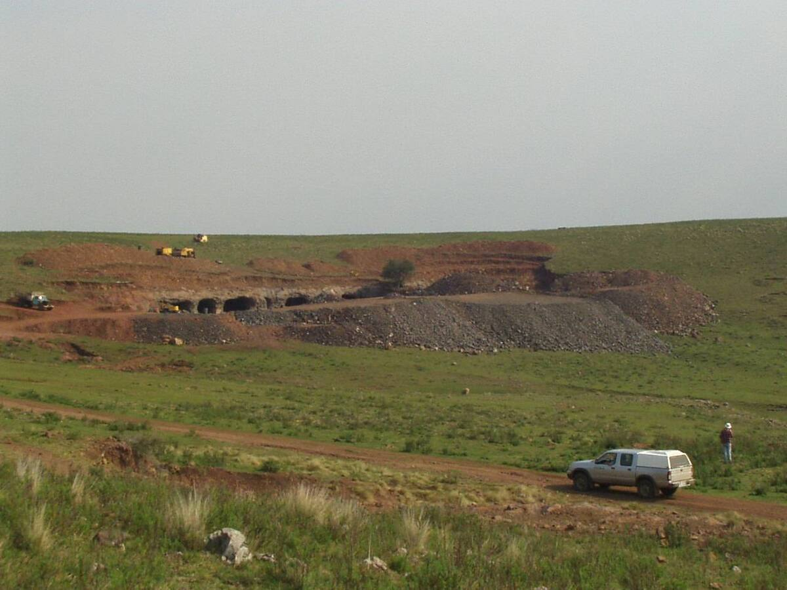
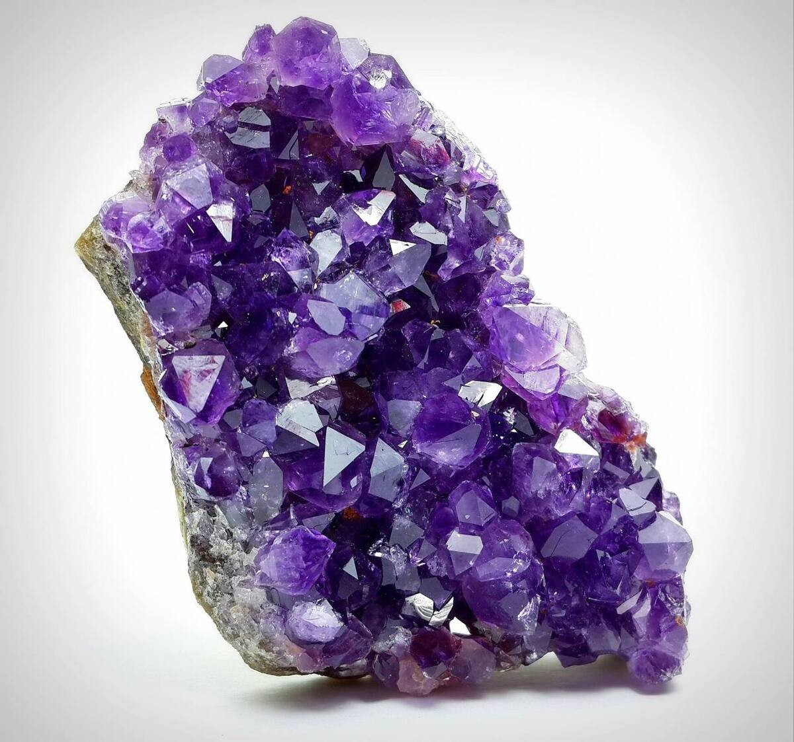

Cristales nacidos de volcanes
Hace unos 130 millones de años, mientras América del Sur se separaba de África, enormes coladas de lava cubrieron esta región. Dentro de esos basaltos quedaron huecos que, con el tiempo, se llenaron de cristales: así se formaron las geodas de ágata y amatista.
En la cuenca de los arroyos Catalán hay entre 20 y 25 yacimientos en explotación. Algunas geodas miden varios metros y pesan toneladas. La Unión Internacional de Ciencias Geológicas (IUGS) incluyó a los yacimientos de Los Catalanes en su lista de sitios de patrimonio geológico.
Una historia larga
- Las amatistas del arroyo Catalán se conocen desde 1750, durante el dominio español.
- En 2007, el servicio geológico de Uruguay publicó el primer estudio detallado de la zona y definió el Distrito Gemológico Los Catalanes.
- La Ley 19.238, de 2014, declaró a Artigas Capital Nacional de las Piedras Preciosas y Semipreciosas, Amatistas y Ágatas.
- A orillas del arroyo Catalán Chico, el arqueólogo Antonio Taddei identificó en los años cincuenta el Catalanense: rastros de los primeros pobladores registrados en Uruguay, de hace entre 8.000 y 10.000 años.
Turismo minero
Hace años que se organizan recorridas guiadas por la zona, conocidas como Safari Minero o Ruta de las Ágatas y Amatistas. Incluyen canteras a cielo abierto, minas de galería, un salón con amatistas gigantes y visitas a talleres de artesanos en la ciudad.
Fotos

Foto: Javier Techera · Dominio público

Foto: Gonzalo Devia · CC BY-SA 4.0